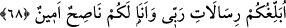
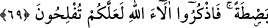

68. Size Rabbimin vahyettiklerini duyuruyorum ve bensizin için güvenilir bir
öğütçüyüm.
“Size Rabb’imin vahyettiklerini tebliğ ediyorum ve ben sizin için güvenilir bir
öğütçüyüm.” Hûd (a.s.), nasihat etme ve güvenilir (emin) olma özellikleriyle
tanınıyordu ve bu şekilde insanlar arasında meşhur olmuştu. Önceki ayetlerde Nûh
(a.s.)’ın kıssası anlatılırken “risâlât” kelimesinin çoğul getirilmesinin sırrı, nasihatın
mânâsı, risaleti tebliğ etmekle nasihat etmek arasındaki fark izah edilmişti.
“Ben sizin için güvenilir bir öğütçüyüm” ifadesi, Hûd (a.s.)’ın kavminin kendisini
bu iki önemli vasıfla (güvenilirlik ve nasihat edicilik) tanıdığına dikkat çekmek içindir.
Çünkü bir şey, ancak muhatabın bildiği vasıflarla tanıtılabilir. Yâhut öğüt ve emanet,
tamamen terkedilmiş durumda olduğundan Hûd (a.s.)’ın bu iki hususta tek olduğunu ve
sanki onları meslek haline getirdiğini belirtmek içindir.
69. Sizi uyarmak için içinizden bir adam vasıtasıyla Rabbinizden size bir zikir
(kitap) gelmesine şaştınız mı? Düşünün ki O sizi, Nuh kavminden sonra onların
yerine getirdi ve yaratılışta sizi onlardan üstün kıldı. O halde Allah’ın nimetlerini
hatırlayın ki kurtuluşa eresiniz.”
“Sizi uyarması” içinde bulunduğunuz küfür ve günahların sonucundan sizi
sakındırması “için içinizden bir adam aracılığı ile” kendi cinsinizden bir adamın dili
ile, sizi terbiye eden ve bütün işlerinizin mâliki olan “Rabb’inizden size bir zikir”
vahiy “gelmesine şaştınız mı?” bunu imkansız olarak mı görüdünüz?” demiştir. Kavmi
ise son derece cahil ve akılsız oldukları için insanın peygamber olmasına şaştıkları
halde putun Allah’ın ortağı olmasına şaşmamışlardır.
Hûd (a.s.) daha sonra nasihat, emânet ve uyarının hükümlerini tertibi üzere
açıklamaya başlayarak şöyle dedi: “Düşünün ki (Allah) sizi Nûh kavminden sonra
onların yerine getirdi.” Yani, onların meskenlerine yerleştirdi veya sizi melikler
kılarak yeryüzünün hakimleri kıldı. Çünkü Şeddâd b. Âd, Âlec kumluğundan Umman
denizine kadar bütün topraklara sahip olup hükmedenlerden biridir.
Ebüssuûd Efendi der ki: Sanki şöyle buyurulmaktadır: “Siz buna şaşmayın, kendi